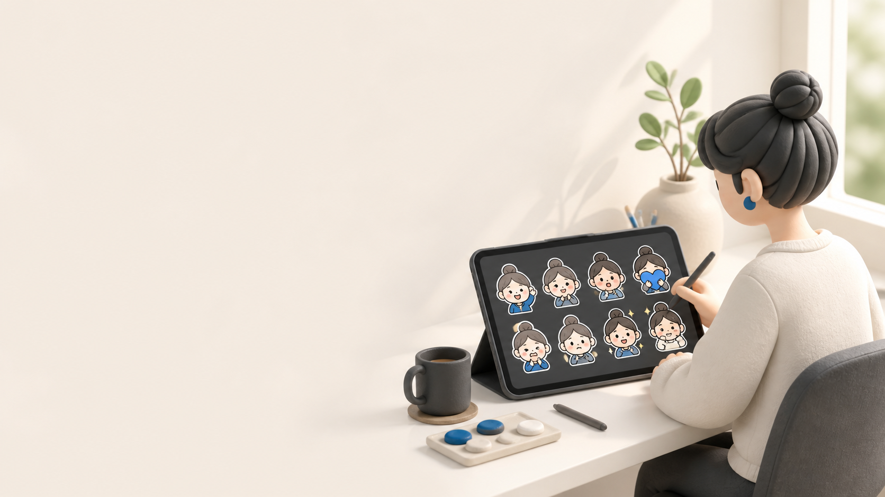

写真・キャラクターをもとに制作
ご本人・ペット・オリジナルキャラクターなど、使用権利を確認できる素材をもとに、統一感のあるスタンプにします。
LINE STICKER PRODUCTION
大切な写真をもとに、会話で使いやすいLINEスタンプを制作します。表情・文字・申請用の画像一式まで、ひとつずつ整えます。

FROM ONE PHOTO
「了解です」「ありがとう」など、毎日のやりとりで自然に使える言葉と表情を組み合わせます。完成前に内容をご確認いただくため、イメージと違うまま進めることはありません。
WHAT WE PREPARE
制作できる内容は、写真や元になるキャラクター、希望する言葉に合わせてご相談いただけます。
ご本人・ペット・オリジナルキャラクターなど、使用権利を確認できる素材をもとに、統一感のあるスタンプにします。
あいさつ、返事、感謝など、日常会話で出番の多い8種類を基本に、文字と表情を一緒に決めます。
透明PNGのスタンプ画像、メイン画像、トークルームタブ画像を、LINE Creators Marketの制作ガイドラインに沿う形でお渡しします。
HOW IT WORKS
DELIVERABLES
通常のスタンプは、8・16・24・32・40個から選べます。ページではまず8個の制作を案内しています。画像の規格や審査基準は変更されることがあるため、申請前にLINE Creators Marketの制作ガイドラインをご確認ください。
ご本人の写真、ペット、オリジナルキャラクターなどを想定しています。第三者の写真、許可のない既存キャラクター・ロゴなどはお受けできません。
お渡しするのは申請に必要な画像一式です。LINE Creators Marketへの登録・申請はご本人に行っていただきます。審査の判断はLINEが行うため、承認を保証することはできません。
制作前に、ご希望の表情・文字を確認します。日常で使いやすい言葉を基本に、用途に合わせてご相談いただけます。
スタンプにしたい写真またはキャラクターと、よく使う言葉をお知らせください。内容を確認したうえで制作の進め方をご案内します。
LET'S START
写真1枚からでもご相談いただけます。